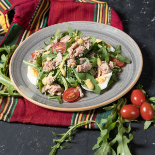

Canned Tuna

Description
Indulge in the delectable harmony of flavors with our savory canned tuna dish. Succulent pieces of premium tuna, packed with wholesome goodness and rich in omega-3 fatty acids, are the star of this culinary masterpiece. Imagine tender flakes of tuna, gently folded into a symphony of vibrant ingredients. Picture a medley of crisp vegetables, vibrant cherry tomatoes bursting with freshness, crunchy cucumbers, and tangy red onions, all delicately mingling together to create a burst of color and flavor. The addition of briny Kalamata olives adds a touch of Mediterranean flair, while fragrant basil leaves impart a subtle herbaceous note.
Shopping List
Take out your pen and paper or your favorite notetaking App and jot this down. You'll need:
- Canned tuna
- Cherry tomatoes
- Cucumbers
- Red onions
- Kalamata olives
- Basil leaves
- Lemon
- Extra virgin olive oil
- Garlic
- Quinoa or whole-grain bread (optional)
How To Prepare
- Prepare the Dressing:
- In a small bowl, whisk together freshly squeezed lemon juice, extra virgin olive oil, minced garlic, salt, and pepper. Set aside.
- Prepare the Salad Ingredients:
- Slice the cherry tomatoes in half.
- Dice the cucumbers and red onions.
- Pit and halve the Kalamata olives.
- Chiffonade the basil leaves.
- Assemble the Salad:
- In a large mixing bowl, combine the canned tuna (drained), cherry tomatoes, cucumbers, red onions, Kalamata olives, and basil leaves.
- Dress the Salad:
- Pour the prepared dressing over the salad ingredients.
- Gently toss the salad until all ingredients are evenly coated with the dressing.
- Serve:
- Serve the tuna salad atop a bed of fluffy quinoa or alongside slices of whole-grain bread.
- Garnish with additional basil leaves if desired.
- Enjoy your refreshing and nutritious canned tuna salad!
See also